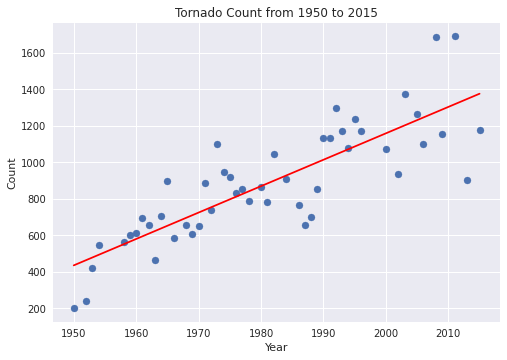
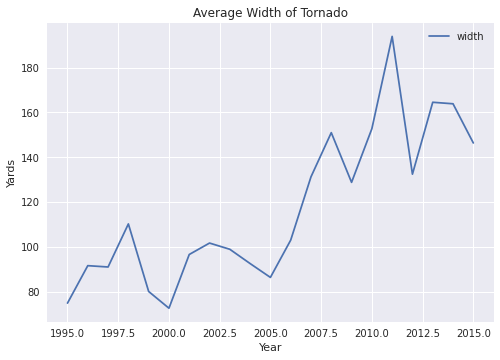
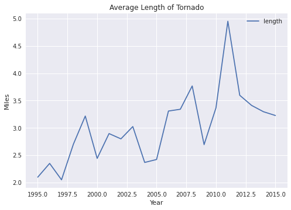

Team Members
Samuel Dean
Matthew Bauer
Data Science Capstone Project
Tornados in America
Are They Becoming More Dangerous?
PROJECT DESCRIPTION
For our Data Science and Analytics capstone project, we were assigned client Tom Coffin to provide us with a problem statement. Our goal was to find a dataset that represented a potential negative consequence from Global Warming.
With this in mind, our team found a dataset that has kept record of tornados that occured in the United States from 1950 to 2015. This set includes details such as F-Scale, width, length, location, injuries, and fatalities.
Our goal is to determine if tornados are occuring more frequently and if they are becoming more dangerous and deadly.
Exploring Our Questions
Our Hypotheses
Are the number of tornados happening each year increasing?
Calculated total count of tornados per year from our data
- With this we find there is a clear upward trend of total tornado count per year from 1950 to 2015.
- The red line is the line produced from a Linear Regression Algorithm used to find the best linear equation that follows the graph.
Are tornados getting longer and wider over the years?
3D Interactive Plot
- This plot is the average of both length and width of tornados each year from 1950 to 2015. Both length and width have a high average but quickly decreases until around 1980. Then the average of both starts to rise rapidly and continues to do so until 2015.
- Line graphs of average length and width but only from 1995 to 2015  
- Both of these plots show a sharp increase within the 20 year period of 1995-2015. The average length and width of tornados doubled by 2010 when compared to 1995.